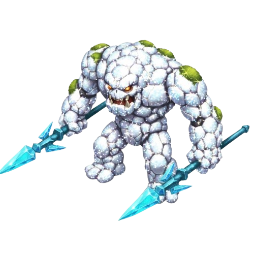
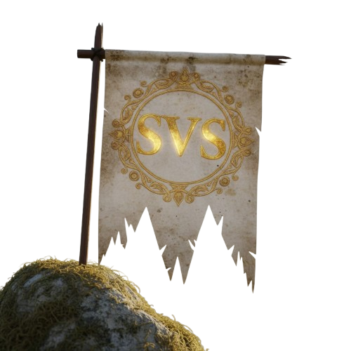
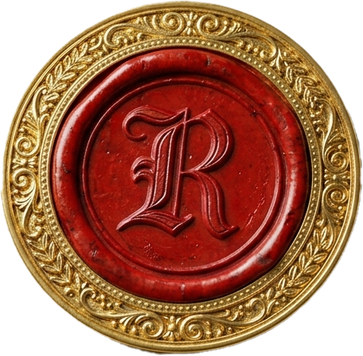

Case Study: Evony UI/UX Concept & Fan Experience
Project Tracking | From Player to Experience Designer
This project originated as a personal interface exploration for the game Evony and evolved into a practical UX/UI case study, tested and validated by both the community and the game's development team.
Explore the creations and navigate through the project.
To view the full analysis, methodology, and conclusions, open the red seal below.
Thank you.


